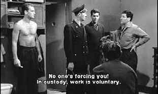

| Le
Trou/A-,A- |
| Criterion/1960/131/ANA 1.66/BW |
An outstanding prison escape procedural,. Le Trou is filmed with stunning
determination. The sounds of the prison, cell doors bolting, footsteps on the concrete floors, the
pounding metal against concrete, echo throughout the film, layering the tension with cold reality.
There is no music.
The final film of French director Jacques Becker, Le Trou
is a tribute to his skill and determination to tell a story with the simplicity
of unadorned force. Almost documentary-like in its style, the film still retains
a polished beauty. A fit closing to a fine career.
 |
| A new mate joins the workforce. ©Criterion |
Prison construction necessitates Claude Gaspard's transfer
to a new cell block. A fifth man added to the already tight quarters is not
initially enthralling to the cell mates, but they embrace Gaspard with some
trepidation. Gaspard's incarceration isn't quite in synch with the other four,
but they have no choice but to include him in their plans for an escape.
The meticulous escape process, more brute force than
intellectual, drives the film relentlessly. You can feel the sweat dripping off
the celluloid. Cat and mouse elements are sustained for maximum tension.
Director Becker maintains an even pace that builds with each strike of metal
against concrete.
The cast is uniformly outstanding. Many of the actors
are first-time performers, but they are never less than natural. Sometimes
there's an interesting self-consciousness about the way they are shot. You can't
put your finger on what it is about the close-up, what's going through the mind
of the actor, but it is always interesting. Jean Kaurady as Roland means
business. When he sweats, it's real sweat. Raymond Meunier's hearty good nature
injects Monseigneur with a likeable screen presence and adds a sense of humor to
the cold setting. Michel Constantin brings a gritty reality to Geo. Marc Michel
plays Claude with an odd edge that works perfectly for his character.
A beautiful transfer from very good sources elements. A few full height
scratches show up, but happily they are toward the extremes of the picture. Very consistent level
of sharpness throughout the presentation. Every chink of cement is clearly defined. Grain shows in
very tight patterns. Excellent blacks throughout complimented by perfect shadow detail. Fine
overall gray scale range. White shadowed removable English subtitles are comfortably sized for
reading and unobtrusiveness. The mono sound is very clean.
|
|
|
|

Lady Eve,
The (SE) A,C+

Wonderful classic comedy from writer/director Preston Sturges. Henry Fonda and Barbara Stanwyck
star.

Selections from the Feature Archive include articles on
Akira Kurosawa, Blonde Bimbos,
Frank
Darabont, Steven Culp,
John
Herzfeld or Vietnam: The
Hollywood Pariah, and many more....
The
Exquisite Muse of Zhang Yimou

The powerful image-making of Zhang Yimou has revealed itself in
virtually every film he has made. Coupled with his remarkable collaboration with actress Gong Li,
Zhang's has built a stunning body of work Click the image to read all about it.

Click on the DVD MIA symbol for
profiles of DVDs missing in action.
Add films to the DVD MIA Master List by filling out
a simple form. Click Here


The
Movie Poster Archive includes extensive poster images from the films of stars like Susan Hayward,
Kirk Douglas, Katharine Hepburn and many more. Our featured star is Tyrone Power.
|